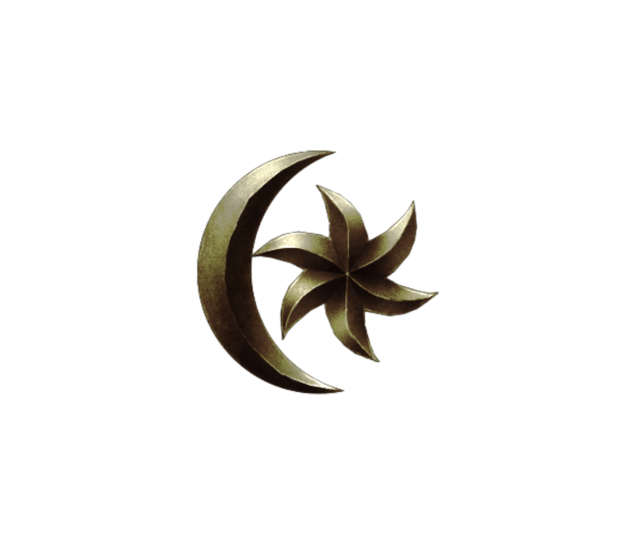
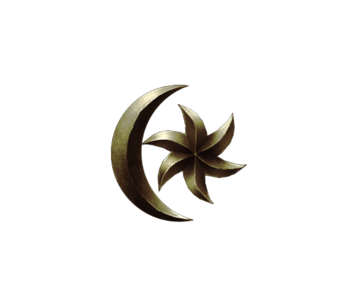

Creacion
Anu y Padomay
El inicio de todo comienza con las dos fuerzas principales (Anu y Padomay) Anu era una entidad incapaz de tener conciencia propia o personalidad, una entidad estática e inmutable que personificaba el orden y la luz pura. Padomay, por otro lado, era la encarnación de los conceptos del caos, la oscuridad y el cambio. Anu deseaba conocerse a sí mismo, por lo que hizo nacer su propia alma para verse reflejado en ella. Y así se creó a un nuevo ente llamado Anui-El. Sin embargo, Padomay, guiado como siempre por la envidia, quiso imitar a su odiado hermano y escindió su alma dando vida a otro ser conocido como Sithis.
Sithis y Anuiel
Sithis es la representación del caos primordial y patrón de la Hermandad Oscura. Es la fuerza opuesta a Anuiel, Sithis reside en el vacio. Los Adoradores de Sithis son la Hermandad Oscura, un culto de asesinos que sirven a sithis a través del asesinato, y las Cicatrices Carmesí, un gremio de asesinos de Vampiro. Muchos vampiros adoran a sithis. Su adoración es rechazada por la mayoría de las culturas, muy probablemente debido a su asociación con la muerte. Anuiel es visto como una fuerza igual pero opuesta a Sithis. Se le describe a menudo como luz u orden, aunque los adoradores de Sithis lo miran como a un demonio.Los aldmer veneran especialmente el Aurbis como Anuiel, el alma del vacío.
Universo y Tiempo
El universo nace de una lucha entre Sithis y Anuiel, lo que creó una intensa energía que originó el Aurbis,el universo que incluye a todos los mundos. En los extremos del Aurbis moraba el Vacío, y entre los mundos o planos que se encontraban en el Aurbis existía Aeterio. El tiempo nace con el nacimiento de Auriel o Akatosh, quien es una creacion de Anuiel quien separo su propia alma para crearlo,Auriel, al nacer, creó en la existencia el concepto del tiempo, lo cual causó que el Aurbis se estabilizara y permitió a los seres de Aeterio formar sus propias identidades para distinguirse entre ellos.
Auriel y Lorkhan
Sithis haria su propia creacion y lo llamaria lorkhan, a quien instruyó con el objetivo de usar trampas y traiciones a fin de lograr la destrucción del universo y el retorno al Vacío. Las entidades que surgieron en Aeterio, llamadas espíritus originales o et'Ada, que son las cosas percibidas por los mortales como dioses o espíritus, se agruparon en torno a Auriel, pues le consideraban su líder.Lorkhan también llegó allí, asegurando ser uno más. Sin embargo, sus intenciones eran perversas. Una vez aceptado, explicó a los et'Ada su plan. Un plan para que entre todos crearan un plano propio, un mundo sin la influencia de Anu o Padomay.
Mundus
Mundus o tambien llamado Nirn es el plano mortal, el cual fue ideado por Lorkhan quien fue capaz de convencer a un grupo de sus compañeros espíritus para que lo ayudaran con su plan, mientras que otros desconfiaban esperando un truco o simplemente estaban desinteresados y se mantuvieron al margen, Magnus el señor de toda la magia dio todo su apoyo a Lorkhan y fue el responsable de idear el plan de la creación. Durante este proceso, se hizo evidente que la propia energía divina los aedra estaba siendo drenada para ayudar a infundir vida al nuevo mundo. Algunos de los aedra lograron escapar del mundo de los mortales, sobre todo Magnus,El sol que hoy brilla sobre Nirn, no es mas que el agujero dejado por Magnus en su huida y las estrellas son los huecos dejados por los Magna Ge, quienes eran el sequito de Magnus. Algunos aedra continuaron sacrificando su divinidad para finalizar la creación del planeta, lo que los dejó debilitados e incapaces de interactuar directamente con el mundo. El último de ellos fue el propio Lorkhan, que por lo general se le considera muerto, con su cuerpo convirtiéndose en la masa física de Nirn. Ademas los aedra que no huyeron invocaron a Akatosh para que este trajera estabilidad a Mundus. El Dios Dragón se arrojo entonces al plano mortal, el cual finalmente logro cristalizarse. El corazón de Lorkhan fue atado a una flecha y disparado hacia el occidente; allí donde el proyectil toco tierra se formo el gran volcán llamado Montaña Roja. Un último grupo de aedra siguió debilitándose, incluso después de haber determinado lo que estaba sucediendo. Estos seres se dieron cuenta de que, a fin de mantener su existencia, serían necesarios para procrear y dar a luz a las generaciones futuras. Cada generación fue perdiendo más de la divinidad de sus antepasados, hasta que finalmente se han debilitado hasta el punto de ser seres mortales. Estos seres fueron llamados ehlnofey, los "huesos de la tierra", y fueron los primeros habitantes de Nirn.
Dioses y Demonios
Aedras
Los aedra son criaturas inmortales, considerados dioses por la mayoría de seres de
Nirn.dependiendo de la zona a un aedra se le puede conocer con uno u otro nombre. Los aedra representan la
creación y el estancamiento para los mortales, ya que estos seres crearon el mundo mortal.
Dioses Aedras:
Akatosh: Dios Dragón del Tiempo y líder de los Divinos
Arkay: Dios de la Vida y la Muerte
Dibella: Diosa de la Belleza
Julianos: Dios de la Sabiduría y de la Lógica
Kynareth: Diosa de la Naturaleza
Mara: Diosa Madre y Diosa del Amor
Stendarr: Dios de la Misericordia
Zenithar: Dios del Trabajo y el Comercio
Daedras
Los Daedra son seres sobrenaturales que Habitan en los planos de Oblivion (una dimensión
paralela a Nirn),pero también son conocidos por los habitantes de Nirn, donde son temidos por algunos y
adorados por otros. Los Daedra son físicamente muy diversos, y van desde la forma humanoide a la bestial. En
ocasiones están vinculados al alma de las armas y las armaduras. A los daedras mayores se les llaman
principes daedricos.
Los principes daedricos son:
Azura: Dama del crepúsculo.
Boethiah: Señor/Dama de las conspiraciones.
Clavicus Vile: Señor de los deseos y los trucos sucios.
Hermaeus Mora: Señor del destino, recuerdos y conocimientos.
Hircine: Cazador de los príncipes y señor de los hombres-bestia.
Jyggalag (Anteriormente): Señor del orden convertido en Sheogorath, que es el actual señor de la
locura, la
manía y demencia.
Malacath: Señor del ostracismo.
Mehrunes Dagon: Señor de la destrucción y la revolución.
Mephala: Dama de los susurros.
Meridia: Dama de la vida y de la luz infinita.
Molag Bal: Señor del dominio, la esclavización de los mortales y del cambio.
Namira: Dama de la putrefacción y lo desagradable.
Nocturnal: Dama de la noche, la oscuridad y la suerte. Protectora de los ladrones.
Peryite: Señor de la pestilencia y del orden en la casa.
Sanguine: Señor de las bromas y los engaños.
Vaermina: Dama de los sueños y las pesadillas.
Planos
Aeterio
Aeterio es el reino donde reside toda la magia de la creación y es el hogar de los aedra,
Ademas,el alma de una persona, al morir, viaja a Aeterio para residir allí en forma de espíritu.
Los reinos en Aeterio son :
Costas Lejanas.
Crucifijo Mantellano.
Llesw'er.
Sovngarde.
Oblivion
Oblivion es una serie de planos, dieciséis de ellos principales, y una larga serie de planos
menores sin que se sepa hasta cuántos puede haber.Cada plano principal esta gobernado por un Príncipe
Daédrico, y dependiendo de a qué Príncipe pertenezca cada uno de ellos, tendrá un aspecto geográfico,
criaturas e influencias de su personalidad únicos.
Dentro de estos planos viven unos seres llamados daedra. Si éstos son eliminados en el plano de los mortales
su alma simplemente regresa al lugar de origen en un nuevo cuerpo.
Eras
La línea temporal de The Elder Scrolls se divide en etapas llamadas Eras. En cada una de
ellas suceden los
acontecimientos de la historia de Nirn:
Era del Amanecer: Esta etapa se sitúa antes de la creación de Nirn y el establecimiento del tiempo
lineal.
Los únicos seres que existieron en esta época son los Et'ada. Terminó con el establecimiento de Nirn.
Era Merética:El tiempo transcurrido entre la partida de Magnus de Nirn y la fundación de la dinastía
Camoran. Duró 2.500 años, y se cuenta hacia atrás desde el año cero, lo que representa el inicio de la
dinastía Camoran.
Primera Era: Este tramo de la historia abarca desde la fundación de la dinastía Camoran hasta el
asesinato
de Reman III. Se calcula que duró 2.920 años. Sin embargo, los eventos del Amanecer Medio han arrojado
cierto grado de duda académica sobre esta figura.
Segunda Era: El período de tiempo entre el asesinato de Reman III y la fundación del Tercer Imperio
por
Tiber Septim. Esta era duró 896 años, y durante ella ocurrieron los eventos de Online y Redguard.
Tercera Era: El período de tiempo entre la fundación del Tercer Imperio y el final de la Dinastía
Septim
durante la Crisis de Oblivion, y duró 433 años. En esta etapa ocurrieron los eventos de Arena, Daggerfall,
Battlespire, Morrowind, Stormhold, Dawnstar, Shadowkey y Oblivion.
Cuarta Era: Esta era hasta la fecha ha durado 201 años, y aún no ha terminado en la línea de tiempo
de los
juegos. En esta época transcurren los eventos de La ciudad infernal, Lord of souls y Skyrim.
Continentes
Tamriel
El continente de Tamriel se divide en nueve provincias:
Ciénaga Negra - Hogar de la raza argoniana.
Cyrodiil - La provincia imperial, que comprende el valle de Nibenay y Colovia.
Elsweyr - Hogar de los khajiitas. En el momento de The Elder Scrolls V, se divide en dos estados, Anequina y
Pelletine.
Isla Estivalia - Una cadena de islas que alberga a los altmer.
Páramo del Martillo - Una región desértica que alberga a los guardias rojos.
Roca Alta - Hogar de los bretones. También es la ubicación de Orsinium, la legendaria ciudad de los orsimer,
que ha sido destruida, reubicada y reconstruida muchas veces. La ubicación de Orsinium en la cuarta era es
desconocida.
Morrowind - La tierra de los dunmer. Dominado por la isla de Páramo de Vvarden y el volcán la Montaña Roja.
Skyrim - Hogar de los nórdicos. la primera provincia en ser colonizada por el humano.
Bosque Valen - Región forestal que es el hogar de los bosmer.
Akavir
Es un continente de Nirn situado al este de Tamriel, cruzando el Océano Padomaico.Este desconocido continente ha sido históricamente uno de los mayores rivales de Tamriel, así como uno de los más influyentes culturalmente. Se le conoce como la tierra de los dragones. Apenas hay datos sobre el continente o el pueblo akaviri, pues son pocos los tamrielianos que se han atrevido a cruzar el vasto océano que lo separa de Tamriel y la práctica totalidad del conocimiento que se tiene de estas tierras proviene de los invasores tsaesci que llegaron durante la Primera Era y con el tiempo se convirtieron en los potentados de Tamriel.
Atmora
Atmora, también conocida como "la tierra helada", es un continente helado situado al norte, en el mar de los fantasmas, los primeros hombres, conocidos como los atmoranos, vivieron allí durante la Era Merética. Según investigaciones actuales se cree que nadie habita ya estas tierras, que se encuentra en permanente clima helado.La historia cuenta que Ysgramor convenció a un buen grupo para abandonar Atmora por la terrible guerra civil que sufría y migrar, llegaron al norte de Skyrim donde fundaron la ciudad de Saarthal.
Aldmeris
Aldmeris, también conocido como Antiguo Ehlnofey y "'Aldmeris perdida",es el mítico continente de Nirn que supuestamente se encuentra al sur de Tamriel y podría ser el antiguo hogar de los aldmer, antepasados de los mer. Poco se sabe sobre esta tierra, incluso muchos han sugerido que no sea real y todo lo referente a ella sean meras conjeturas. es un continente del que apenas hay registros de su historia, política o religión. Según se narra en alguna fuente, durante la Era Merética temprana, un enorme fragmento del mundo ehlnofey aterrizó en Nirn relativamente intacto, y sus habitantes se convirtieron en los antepasados de los elfos.
Pyandonea
Pyandonea es un archipiélago al sudoeste de Tamriel. Identificado a veces como continente, las islas están cubiertas por bosques cálidos y húmedos, y un hábitat en el que proliferan los espíritus del agua. Es también la patria de los elfos del mar (o maormer). El rey de Pyandonea es el inmortal Orgnum. Hace tres siglos, la isla rompió su alianza con las islas de Estivalia, y Orgnum emprendió guerra contra Tamriel.Potema, Reina Loba de Soledad habló con Orgnum convenciéndolo de que ella ayudaría a derrocar al emperador actual, su hermanastro Antíoco. Orgnum y su flota atacaron, y cuando la flota de Orgnum pasó cerca de Artaeum, la isla donde tiene su sede la Orden Psijic, una tormenta mágica destruyó la flota entera incluyendo a Orgnumvvs
Yokuda
Yokuda está al oeste de Tamriel y era la patria de los guardias rojos. Fue un continente próspero y el lugar de nacimiento de la civilización de los yokudanos. Hace 3500 años, fue devastada por una ola gigantesca, de la cual las causas siguen siendo desconocidas hasta hoy. Algunos creen que fueron causadas por los sload, pero se acepta más comúnmente que el continente estaba en una guerra civil y los yokudanos utilizaron un arma terrible que envenenó el agua y saló el suelo de sus tierras, haciéndolas estériles.
Razas
Altmer
Los altmer, o también llamados altos elfos, son una raza del grupo de los mer y se caracterizan por su piel dorada y gran estatura.
Argonianos
Son una raza de hombres bestia con forma reptil habitantes de la Ciénaga Negra,son de las razas más ágiles y gracias a sus cualidades anfibias pueden respirar debajo del agua.
Bretones
Son humanos descendientes de la mezcla entre los antiguos nédicos con el pueblo mer que vivía en lo que hoy es Roca Alta. Por ello, tienen también mucha afinidad con la magia, siendo los humanos más aptos para ella.
Bosmer
Los Elfos del bosque, son una raza de elfos surgida como consecuencia de la mezcla de los mer con humanos,son inmejorables usuarios del arco y muy buenos en el sigilo.
Dunmer
Conocidos como elfos oscuros son los habitantes del este de Tamriel y se caracterizan por su piel grisácea y sus ojos rojos.
Guardias rojos
Son una raza de humanos nativa originariamente del continente de Yokuda. Tras escapar de la destrucción de su tierra natal huyeron a lo que hoy es Páramo del Martillo.
Imperiales
Son originarios de la provincia imperial de Cyrodiil, siendo en realidad una evolución de la antigua raza humana de los nédicos. Su civilización ha conquistado todo Tamriel, haciendo del Imperio el paradigma de la civilización y la buena organización en la serie.
Khajitas
Son la otra raza de hombres bestia, junto con los argonianos. Son una raza de humanoides con rasgos felinos. Eso los hace sigilosos y con tendencia hacia el robo, además de buenos luchadores mano a mano gracias a sus garras.
Nordicos
Son los primeros humanos que llegaron a Tamriel. Lo hicieron desde su continente nativo, Atmora. Después de llegar lograron ir conquistando una parte de Tamriel,suelen usar armas a dos manos y armadura ligera, lo que los hace buenos guerreros ofensivos.
Orsimer
Los orcos, también conocidos como orsimer (que significa "el pueblo paria" en élfico), son un pueblo de costumbres bárbaras.
Dwemer
Son conocidos a menudo como "enanos",Eran una raza solitaria e independiente, dedicada a los principios de la ciencia, la alquimia y la ingeniería, es una raza que por razones desconocidas se desvanecio.
Falmer
Son la degeneración de los antiguos elfos de las nieves, después de haber sido traicionados por los dwemer, los cuales los cegaron para utilizarlos como esclavos.
Conflictos
Guerra de los Dragones
La Primera Guerra de los Dragones fue una guerra librada en la Era Merética entre los dragones y los
hombres.
Después de que Ysgramor y sus seguidores se establecieran por primera vez en Skyrim durante la era Merética,
trajeron su religión nativa atmorana con ellos. Conocida como el Culto del Dragón, esta fe adoraba un
panteón de animales totémicos, a saber; el halcón, el lobo, la serpiente, polilla, búho, ballena, oso, zorro
y el más importante, los dragones, como avatares de los dioses. Se cree que estos tótems eran de hecho
las primeras interpretaciones atmoranas de los Divinos.
Los atmoranos consideraban a los dragones como cabeza del panteón, y teniendo en cuenta que los dragones
existían en gran numero por todo Tamriel y Atmora, con el tiempo se convertirían en la adoración pura y
simple de los dragones vivos, siendo Alduin el principal de ellos.
Los dragones abrazaron su papel como reyes-dioses sobre los hombres, pero en lugar de lidiar con el propio gobernante real, concedieron pequeñas cantidades de poder de los sacerdotes dragón a cambio de la obediencia absoluta. A su vez, los sacerdotes gobernaron a los hombres como reyes. Los sacerdotes asentaron las leyes y los códigos de la vida que mantenían la paz entre los dragones y los hombres, pero para esto exigían tributo. Su sistema de gobierno era corrupto y sin embargo los sacerdotes comenzaron a gobernar con mano de hierro, esclavizando al resto de la población.
Alduin era considerado la máxima creación de Akatosh. Alduin disfrutaba de la arrogancia de estos galardones. A favor de la conquista de Mundus para él y sus compañeros dragones, abandonó su "papel apropiado" como devorador de mundos.
Finalmente los hombres se rebelaron contra la gran crueldad de Alduin y los dragones, y la Guerra de los Dragones comenzó. En un primer momento, la humanidad fue tristemente superada, y fue fácilmente derrotada por los dragones y su voz.
Kyne intervino y envió a Paarthurnax para ayudar a la humanidad. Paarthurnax, originalmente el lugarteniente de Alduin , traicionó a su antiguo maestro y hermano y enseñó el poder de la voz a la humanidad, y la creación de los primeros Lenguas. Otros dragones se aliaron a Paarthurnax.
La humanidad creó un grito conocido como Desgarro de dragones, construido por el odio a la tiranía y la opresión de los dragones. Su uso hace que el concepto de la mortalidad en el dragón, algo que es incomprensible para un ser inmortal, y aturde temporalmente a la criatura.La guerra llegó a su punto culminante cuando los antiguos héroes nordicos, Hakon Ojo Único, Felldir el Viejo y Gormlaith Asa Dorada, lucharon contra Alduin en una batalla en la cumbre de la Garganta del Mundo. Después de que Gormlaith muriera y Hakon fuera gravemente herido, Felldir utilizó un pergamino antiguo para desterrar a Alduin. Esta victoria, sin embargo, fue sólo temporal, ya que volvería a aparecer en la Cuarta Éra y comenzaría la Crisis del dragón.
Guerra Atmorano-Falmer
La Guerra atmorano-falmer fue un conflicto que comenzó a finales de la Era Merética. Fue librada por los atmoranos, antepasados de los nórdicos, y los elfos de las nieves, y tal vez, es una de las guerras más largas de la historia registrada de Tamriel.
A finales de la Era Merética comenzó la tradición atmorana de emigrar y establecerse en Mereth, continente más tarde conocido como Tamriel. Los primeros antepasados nórdicos habían dado a esta tierra ese nombre debido a los mer, que solía gobernar aquí.
Durante un tiempo, los colonos atmoranos y los habitantes mer vivían en paz los unos con los otros. Esto dio lugar a un auge de la población atmorana en Skyrim. Las duras condiciones meteorológicas y la guerra civil en Atmora aseguraron que más atmoranos vinieran a Mereth. De ese modo, el primer asentamiento importante fue construido -. Saarthal
Algunos creen que esto podría haber sido la razón por la que los Falmer decidieron deshacerse de los atmoranos: la tasa de reproducción relativamente rápida de los hombres podría haber asustado a sus vecinos elfos. Por lo tanto la población elfica podría haber decidido dar caza a los atmorans como alimañas.Algunos creen que esto podría haber sido la razón por la que los Falmer decidieron deshacerse de los atmoranos: la tasa de reproducción relativamente rápida de los hombres podría haber asustado a sus vecinos elfos. Por lo tanto la población elfica podría haber decidido dar caza a los atmorans como alimañas.
La guerra comenzó con una emboscada deshonrosa. Los elfos de las nieves atacaron a los desprevenidos atmoranos por la noche y mataron a todos los que se pusieron a la vista. Saarthal quedó en ruinas y se dice que sólo tres supervivientes fueron capaces de escapar de la carnicería y navegar de vuelta a Atmora: Ysgramor y sus dos hijos. Este evento es conocido como la Noche de Lágrimas.El plan aparentemente exitoso, no hizo mas que alimentar la ira de los atmoranos en la forma de los Quinientos Compañeros liderados por Ysgramor. Una flota de chalupas salió del puerto de Jylkurfyk para vengar a sus hermanos y hermanas injustamente asesinados. El retorno atmorano a Skyrim dió comienzo al período de tiempo simplemente llamado "El regreso". Durante esta época, los atmoranos llevaron a cabo escaramuzas sangrientas para matar y esclavizar a la población elfa. De esta manera los ancestros nórdicos se extendieron rápidamente por todo Skyrim y áreas cercanas, reclamando estas tierras para sí mismos.
Guerra de los Gigantes
La Guerra de los Gigantes fue un conflicto acontecido durante el transcurso de la Era Merética que enfrentó a los atmoranos de Ysgramor, con sus Quinientos Compañeros, contra el clan de gigantes del caudillo Sinmur en Skyrim. Hay evidencias que la mayor parte del conflicto se desarrollo en la actual comarca de La Grieta.La guerra contra el clan de Sinmur fue brutal, pues cada bando sufrió inmensas bajas por doquier, grandes héroes entre los Quinientos Compañeros cayeron durante el transcurso de la guerra como (Jalarma Corazón de Fuego, Bron Martillo Oscuro, Hakra, Valdur ). Tras años de intensa y fiera lucha Ysgramor y el caudillo Sinmur y los últimos restantes gigantes del clan de Sinmur se enfrentaron en el Túmulo de Sinmur donde Ysgramor solo logro matar a Sinmur y sus restantes guerreros.Los restos de Sinmur fueron enterrados en la actual comarca de La Grieta, donde los espíritus de los Quinientos Compañeros caídos contra el clan de Sinmur guardaron la tumba del gigante de los intrusos.
Rebelión de los esclavos de Alessia
La Rebelión de los esclavos de Alessia fue un conflicto armado que tuvo lugar en la Primera Era y dentro del
marco del antiguo reino ayleid de Ald Cyrod, el actual Cyrodiil. Bajo el liderazgo de Alessia, denominada La
Reina de los esclavos, los esclavos de Cyrodiil se rebelaron contra sus amos ayleid en un levantamiento a
gran escala.
La rebelión comenzó en el año 242 PE y terminó un año después, en 243 PE, cuando el legendario
guerrero-nómada Pelinal Descarga Blanca dio el golpe final matando a Umaril el Impetuoso en la Torre Blanca
y Dorada. Sin embargo, Pelinal murió junto con el rey ayleid, y fue cortado en ocho partes como señal de
burla hacia los Divinos por parte de los ayleids, que estaban obsesionados con este número.Tras esto se
estableció el Imperio Alessiano con Alessia convertida en la primera emperatriz. Aunque no era la primera
victoria de los hombres sobre los mer, a menudo este es considerado como el punto de inflexión más
influyente en la lucha de poder hombre-mer, y marca el punto en el que el hombre comenzó a dominar sobre
Tamriel. La Rebelión de los esclavos de Alessia se utiliza a menudo como un símbolo del poder de los hombres
y de las consecuencias del trato con los daedra.
La victoria, aunque muy beneficiosa para los cyrodílicos, marcó el inicio de la lenta extinción del poder de
la raza ayleid, que terminaría alrededor de 500 PE, después del Período Ayleid Tardío